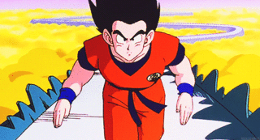

- Raditz
- Entrenamiento
- Vegeta y Nappa
Raditz
Cinco años después de la pelea contra Piccolo, Goku se encuentra viviendo felizmente con Chi-Chi en
la Montaña Paoz; Incluso tienen un hijo, llamado Gohan, de cuatro años. Todo parece estar en paz,
hasta que un extraterrestre llega a la Tierra, preguntando por un tal Kakarot.
Con ayuda de su rastreador encuentra a Piccolo, pero al no ver que es él la persona que busca, lo
ignora y se va, habiendo encontrado a Goku. Éste se encuentra en Kame House presentando a Gohan a
sus amigos, cuando el extraño los encuentra.
El extraterrestre se presenta como Raditz, que para sorpresa de todos pero más aún del propio Goku,
resulta ser su hermano mayor y dice pertenecer a los Saiyan, una raza de despiadados y poderosos
guerreros que conquistan planetas. Según Raditz, el verdadero nombre de Goku es Kakarrot, quien
además proviene del planeta natal de los Saiyans (el Planeta Vegeta) y que al nacer fue enviado a la
Tierra para acabar con todos sus habitantes. Aunque Goku lo niega todo, Raditz le indica que los
Saiyans poseen cola, y Gohan la tiene, aunque para su indignación, Goku no.
Ante este hecho, Kame-Sen'nin decide explicarle a Goku que en realidad, él no recuerda nada de su
misión debido a que cuando era un bebé, cayó desde lo alto de un acantilado recibiendo un fuerte
golpe en la cabeza que además de dejarlo casi al borde de la muerte, anuló sus instintos asesinos de
Saiyan.
Como Goku no atiende razones, Raditz decide obligarlo a que cumpla la misión para la que fue
programado, y rapta a Gohan, amenazando con matarlo si en 24 horas no le trae 100 cuerpos de humanos
muertos. Cuando Goku trata de atacarlo, Raditz lo vence de un solo golpe. Piccolo viendo cuan grave
y seria era la situación, se alía con Goku (aludiendo que Raditz interfiere con sus planes de
conquista) y le planta cara a su hermano, pero ni aún atacando los dos juntos logran hacerle el daño
esperado.
Cuando el KameHameHa de Goku falla, Piccolo dispara un Makankosappo, pero Raditz lo esquiva,
dañándose su armadura. Cuando va a contraatacar, Goku le sostiene la cola, haciendo que pierda sus
poderes.
Raditz le promete a Goku que ha recapacitado y le pide que lo suelte, y a pesar de la negativa de
Piccolo, Goku ingenuamente le cree y lo suelta.
Cuando Raditz ataca, golpeando y torturando duramente a Goku, detecta un poder de 1300, que proviene
del pequeño Gohan, que al ver a su padre ser castigado, se enfurece y de un solo pero fortísimo
golpe deja a Raditz muy malherido (Gohan tiene un potencial oculto. muy grande, que solo saca a la
luz en momentos de tensión o emoción extremos). Goku aprovecha y sujeta fuerte a Raditz, y Piccolo
les dispara con un Makankosappo con lo cual deja a Goku al borde de la muerte y a Raditz termina
matándole; Sin embargo antes de morir, Raditz revela que los otros Saiyan que estaban con él,
vendrán a la Tierra en un año debido a que Piccolo le hablo a Raditz antes de morir que revivirían a
Goku con las Esferas del Dragón, dato que le intereso a Raditz e hizo saber a sus colegas.

Raditz raptando a Gohan

Piccolo y Goku contra Raditz

Goku y Raditz Muriendo
Entrenamiento
Goku logra llegar al pequeño planeta de Kaio-sama, teniendo grandes problemas con la fuerte gravedad
del lugar. Kaio del Norte, que se cree la persona más divertida del Universo pero cuyos chistes son
pésimos, le dice a Goku que antes de ser entrenado por él, debe atrapar a su mono Bubbles y golpear
con un mazo a Gregory, y luego de lograrlo, empieza el entrenamiento, en el que Kaio le enseña el
Kaio-ken (para multiplicar el poder) y la Genki-dama (esfera de energía proveniente de todos los
seres vivos).
En la Tierra, mientras tanto Bulma investiga el rastreador de Raditz, Piccolo se lleva a Gohan a un
lugar deshabitado para entrenarlo. Durante seis meses Gohan debe sobrevivir absolutamente solo
rodeado de diversos peligros, y en los otros seis Piccolo lo entrena para pelear. Gracias a la
intermediación de Uranai Baba, Karin y Yajirobe, Kame-Sen'nin y Bulma son informados de que Goku
pidió ser revivido un año más tarde, y que Kami ha convocado a entrenar en el Templo Sagrado a
Krilin, Yamcha, Tenshinhan, Chaoz y al propio Yajirobe. Una vez transcurrido el año y tal como
Raditz lo advirtió, llegan los Saiyan y Goku vuelve a la vida, pero para volver a la Tierra debe de
recorrer otra vez por el Camino de la Serpiente.

Goku corriendo el camino la Serpiente
Vegeta y Nappa

Vegeta y Nappa apenas llegan a la Tierra, destruyen una ciudad entera con todos sus habitantes y
luego detectan las presencias de algunos de los guerreros, llegando al lugar en donde se
encuentran Piccolo y Gohan. Luego, llegan Krilin, Tenshinhan, Chaoz y Yamcha. Nappa planta seis
semillas de las cuáles salen los Saibaiman. Tenshinhan derrota al suyo y Yamcha también, pero
éste solo estaba fingiendo y mata a Yamcha auto-destruyéndose. Como represalia, Piccolo y Krilin
acaban con todos los demás. Ahora el turno para pelear es para el poderoso Nappa, y en este
combate caen Tenshinhan (muerto de agotamiento por usar excesivamente su Kikoho), Chaoz (trató
de autodestuirse junto con Nappa, sin éxito) y Piccolo (quien salva a Gohan recibiendo el
impacto de un poder de energía dirigido a él).
Gracias a que Vegeta accede esperar a Goku por un plazo de tres horas, Gohan y Krilin logran
sobrevivir. Aunque tarde y justo en el momento cuando Nappa está por asesinar a Gohan quien
intentó atacar a Nappa con un Masenko usando todas sus fuerzas, por fin llega Goku, que divide
la última Semilla del Ermitaño que le quedaba para recuperar las fuerzas de Krilin y Gohan, y al
atacar a Nappa lo vence fácilmente con ayuda del Kaio-ken. Cuando Nappa le pide ayuda a Vegeta,
éste, lleno de vergüenza por lo débil que resultó ser su compañero ante el poder de Goku, lo
asesina por inútil y se retira a pelear con él en un lugar apartado, a pedido de este último
para no dañar los cuerpos de los fallecidos. Como su oponente es muy poderoso, Goku triplica el
Kaio-ken, poniendo en peligro su cuerpo, pero gracias a ello logra sobrepasar el poder de Vegeta
y consigue golpearlo ferozmente y causarle heridas de gravedad.
Para liquidar el asunto, Vegeta decide destruir la tierra con un Galick Ho el cual Goku
contrarresta con un KameHameHa apoyado por el Kaio-ken x3, sin embargo, el Galick Ho comienza a
ganar potencia lo cual obliga a Goku a arriesgarse al límite y a usar un Kaio-ken x4
consiguiendo así superar una vez más a Vegeta y causarle heridas mortales. Vegeta malherido pero
furioso decide acabar con Goku de una vez y empieza a buscar la luna para transformarse en
Ōzaru, sin embargo Vegeta no
logra hallar la luna (la destruyó Piccolo durante el entrenamiento, al ver a Gohan convertirse
en Ōzaru). Entonces, crea una Bola de Poder para transformarse, y siendo éste tan superior, Goku
deja momentáneamente ciego a Vegeta con la Bengala Solar y ante la situación recurre a la
Genki-dama. Sin embargo, antes de que Goku la complete, Vegeta se recupera y ataca. Cuando
Vegeta rompe las piernas de Goku, éste con sus últimas energías lanza una onda de ki contra
Vegeta quemandole el ojo derecho; el malherido Vegeta se enfurece, toma a Goku y trata de
triturarlo con sus manos; justo en ese momento Krilin y Gohan llegan para salvar a Goku. Krilin
entonces, intenta cortar la cola de Vegeta con un Kienzan pero Vegeta que gracias a esta pelea
pudo aprender a sentir las presencias sin recurrir al Rastreador, logra esquivar su ataque, pero
entonces, aparece Yajirobe y le corta la cola con su espada, haciendo que regrese a su estado
normal. Cuando Goku tiene la Genki-dama lista, se la pasa a Krilin, y éste la lanza, pero Vegeta
la esquiva y la misma se dirige hacia Gohan, que la hace rebotar hacia él, golpeándolo de lleno.
Vegeta, muy malherido, trata de destruir todo el sitio, pero Gohan, al que le había crecido la
cola durante el combate, ve la Luna Artificial y se convierte en Ōzaru, perdiendo el control y
destrozando todo.
Vegeta con sus últimas fuerzas corta la cola de Gohan, quien cae sobre él. Vegeta no logra
apartarse, siendo aplastado por Gohan, aunque sobrevive. Cuando Vegeta intenta huir, Krilin, que
advirtió el intento de escape de Vegeta, toma la katana de Yajirobe y se la coloca en el cuello,
dispuesto a decapitarlo. Pero Goku le pide que lo deje ir, ya que quiere volver a pelear con él
en un futuro próximo. Krilin acepta a regañadientes y lo deja ir. Entonces, dentro de Vegeta
nace el rencor contra Goku, que durará largos años.

Goku contra Nappa
Goku contra Vegeta